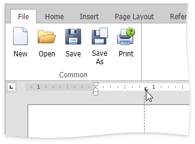

Using Tabs
Tab stops specify the exact positions the cursor moves after repeatedly pressing the TAB key. Tab stops are located on the horizontal ruler and allows you to align text.

Depending upon types of tab stops, typed text can be extended to the right, left or center position of the tab.

You can set any type of tab stops either by using the ruler or by using the dialog box.
Note
There are no tab stops on the ruler when you create a new document.
Types of Tab Stops
| Type of a Tab Stop | Example |
|---|---|
 - Left Tab. The start position of text is located to the right of the tab. Text will move to the right. - Left Tab. The start position of text is located to the right of the tab. Text will move to the right. |
 |
 - Center Tab. The cursor is located in the middle of the tab. Text will be centered based on the tab position. - Center Tab. The cursor is located in the middle of the tab. Text will be centered based on the tab position. |
 |
 - Right Tab. The start position of text is located to the left of the tab. Text will move to the left. - Right Tab. The start position of text is located to the left of the tab. Text will move to the left. |
 |
 - Decimal Tab. The tab position specifies the location of the decimal point. Text before the decimal point extends to the left and text after the decimal point, extends to the right. - Decimal Tab. The tab position specifies the location of the decimal point. Text before the decimal point extends to the left and text after the decimal point, extends to the right. |
 |
Set Tab Stops by Using the Ruler
To set a tab stop by using the ruler, do the following:
Click the tab selector at the left end of the horizontal ruler until it displays the type of tab that you want.

Click on the ruler to set a tab stop at a specific position.

Set Tab Stops by Using the Tab Dialog Box
To set a tab stop by using the dialog box, do the following:
Select the Page Layout tab, and click in the right bottom corner of the Paragraph group.

The Paragraph dialog box is invoked.

In the invoked Paragraph dialog box, click the Tabs.. button. The Tabs dialog box is invoked.

In the opened Tabs dialog box, specify a tab stop's settings and click the Set button.

Repeat the previous steps for each tab stop and click OK.

You can drag any existing tab stop along the horizontal ruler to a different position.